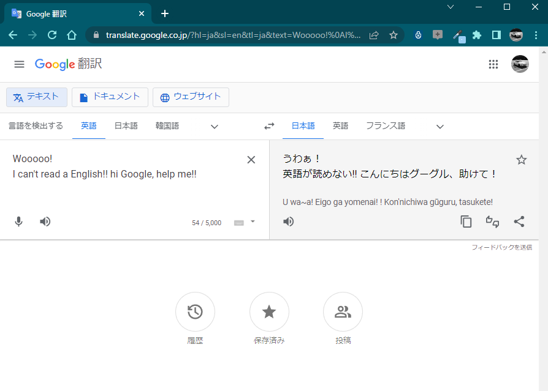
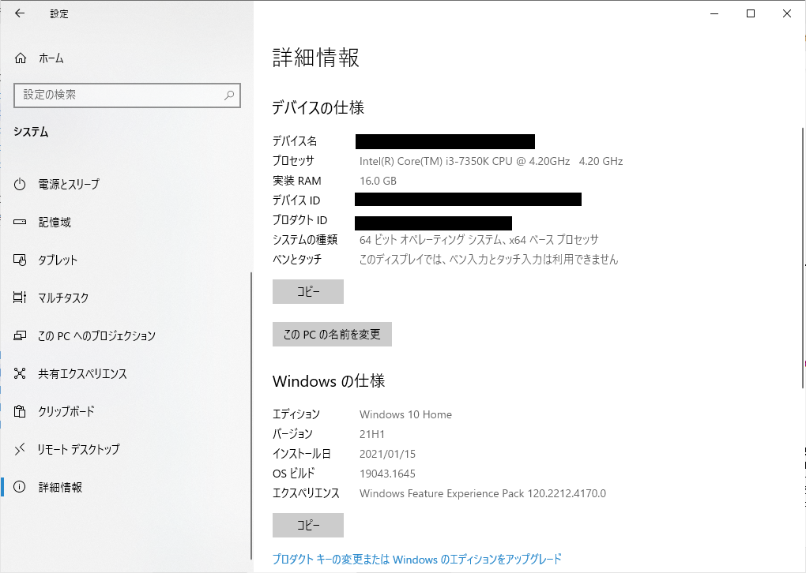

私がITの知識に興味を持ったのは、20歳の時でした。
もうかれこれ10年以上前の話になるんですかね。
現在では企業の中で小さなシステムを作ったりするようなIT職になりましたが、特別な知識は持っていません。
至って普通科の高校を卒業し、専門学校に通っていたわけでもなく、個人的にプログラミングが出来るようになりました。
私は趣味でITの世界に入り、業種を製造業からITに転向させました。
いきなり個人的なお話を勝手に持ち出して申し訳ないですが、ここで私が伝えたいのは 誰しもプログラミングもとい、システム開発者になる素質はある という話をしたかったのです。
そうですね・・・敢えてそこに差があるとすれば、
器用か不器用か、これまでの人生で個性的な思想を持っていたかどうかという部分だけではないかと思います。
今皆さんがこのウェブサイトを見ているという事は
- 「プログラミングを始めてみたい」
- 「IT情報処理の知識を学習したい」
- 「スマホのアプリを作ってみたい」
このウェブサイトでは、プログラミングをこれから始めようとしている方でまだ何も分からない方々を対象としています。
逆にプログラミングをかじった事がある方、または情報処理系の専門学校などである程度ITについて知っている方にとってはつまらない内容かもしれません。
（アルゴリズム関連の知識解説や、制御構造、IT知識の基礎概念などの説明などが当ウェブページのコンテンツです）
一応当サイトではその他様々なプログラム言語の入門ぺージを設置していますので、もしお役に立てる事があればそちらをご参照下さい。
ウェブサイトガイダンス
基本的には順番に読み進めてもらえればOKです。
しかしながら私もプロの講師ではないので、どうしても説明が至らない部分が出てくるかと思います。
そういう時は素直に割り切って「Google（グーグル）」などのウェブ検索を活用しましょう！
いきなりこんな事は個人的に書きたくはないのですが、
この世界ではより多く知識を持っている者が優位に立てる仕組みになっています。
IT革命時代と言われる現代、「デジタルデバイド (digital divide)」という言葉が時折話題に上がるようになりました。
これは情報技術の知識と知っている者と知らない者で、暮らしやすさや社会的地位に隔たり（いわゆる差の事）が生まれてしまう問題の総称です。
携帯電話を使える人と使えない人では目に見える風景が変わり、日々の生活も一変してしまう世の中になったのです。
情報は世界中のみんなが公正公平に得る事ができる唯一の知識の素です。
困ったら詳しい人や情報媒体に教えてもらうのが一番です。
さてもう一つ。
ITの世界では困った事に一般的に難しいと思われる横文字の単語や用語（下手をするとネイティブな英語・・・）がたくさん出てきます。
実は私も碌に英文なんか読めません( ^ω^)
「アイ・アム・ア・ペン」とか言ってますからね(笑)
しかし、現代では便利な事に自動翻訳サイトが存在します。
これらをフル活用していきましょう。
|  |
機械翻訳サイトも近年はかなり有効に機能するようになりました |
当サイトの講座では注意書きや補足として、
「これはちょっと詳細言っておいたほうがいいな・・・」と思った部分について以下のような強調枠を設ける事にしています。
下記のリンクをクリックすると別画面が出てくるか確認してみて下さい。
（注意：スマートフォンで見られている方はちょっと出ないかも・・・ごめんなさい m(_ _;)m）
コラム記事 |
|
|
別に必須ではないが、知っておくと便利な知識をこの薄色の枠で紹介していきます。 |
重要な情報 |
|
|
注意事項、禁止事項などを記載する少し強調した枠として記載します。 |
これらは必要な箇所で適宜配置していきますので、よろしければ参考までに気にしてみて下さい。
対象としているパソコン環境について
プログラミングの学習という事で、基本的にパソコンで閲覧する前提とさせて頂きますが、その点はご了承ください。
（スマホでも一部閲覧くらいはできるかもしれません）
あとパソコンの種類ですが、私が「Windows」しか手元にないため基本的に解説している内容はWindows PC前提になります。
すみません(^-^;
「appleのMacは？」という事ですが、「Macintosh」でも同じ事ができるはずです。
ただし使うアプリなどは違う点があると思いますので、よく分からない方はなるべくWindowsで参照下さい。
Windows環境がお手元にない方には申し訳ないですが、この点は事前にお断りさせて頂きます。
解説する対象のパソコン環境
- Windows OS
- Windows10 のMicrosoftサポート対象のバージョン
- 64ビットオペレーティングシステム
プログラミングを行うパソコンのスペックは拘りありませんが、YouTubeなどの動画サイトを快適に参照できるくらいのスペックで十分だと思います。
各自端末のスペックはWindowsスタートメニューの「設定」画面の「システム」→「詳細情報」から見る事ができます。
|  |
メモリは8.0GBくらいあれば安心。一般的なWindows 10のパソコンならOK |